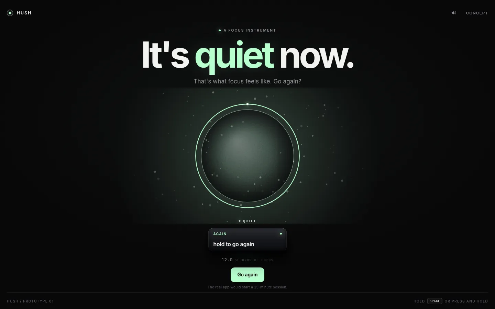
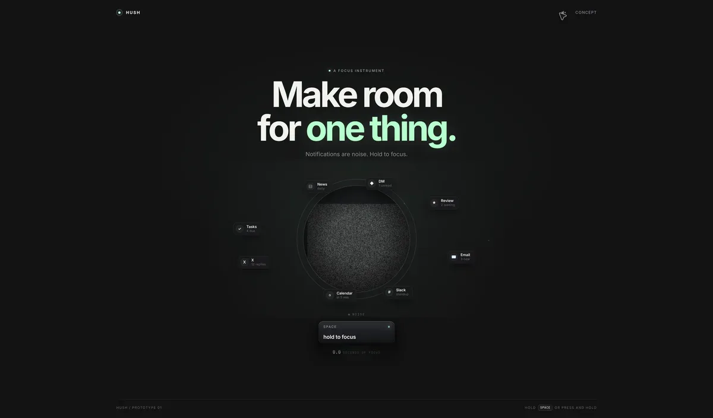
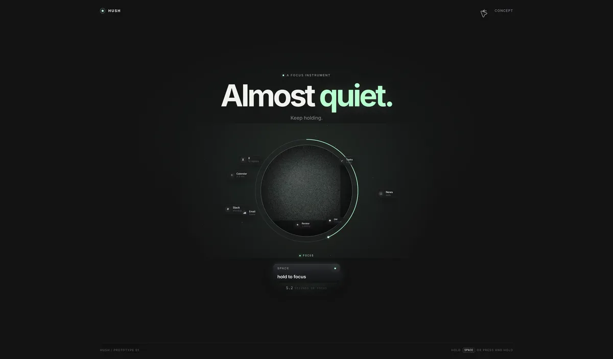
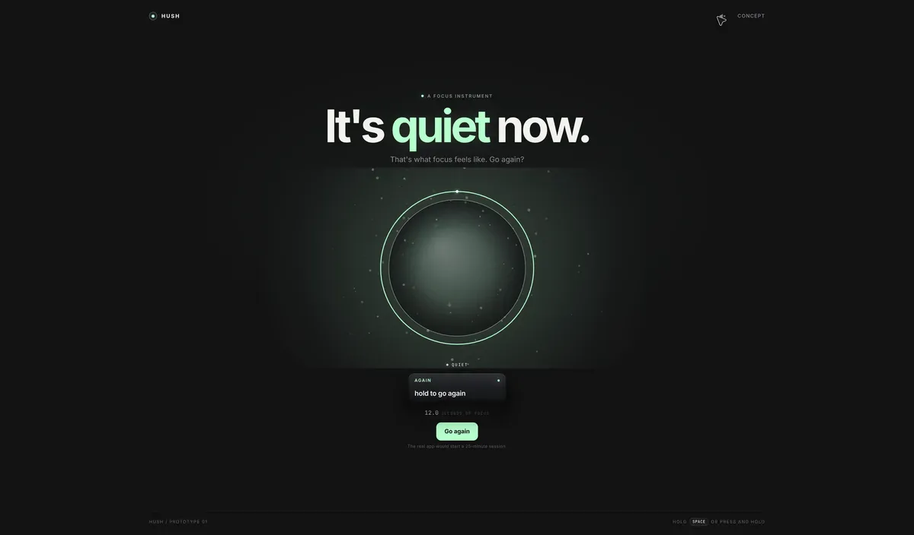
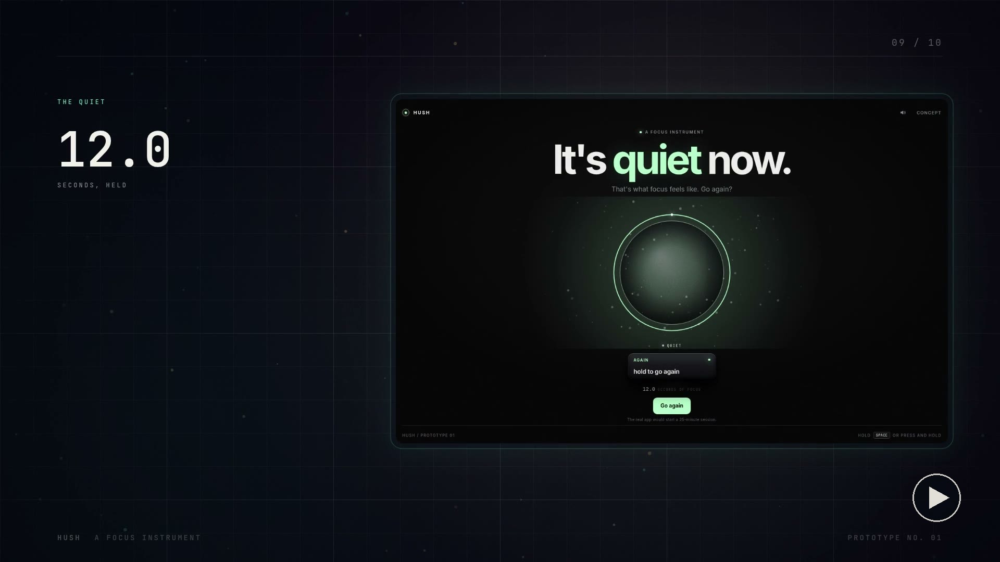
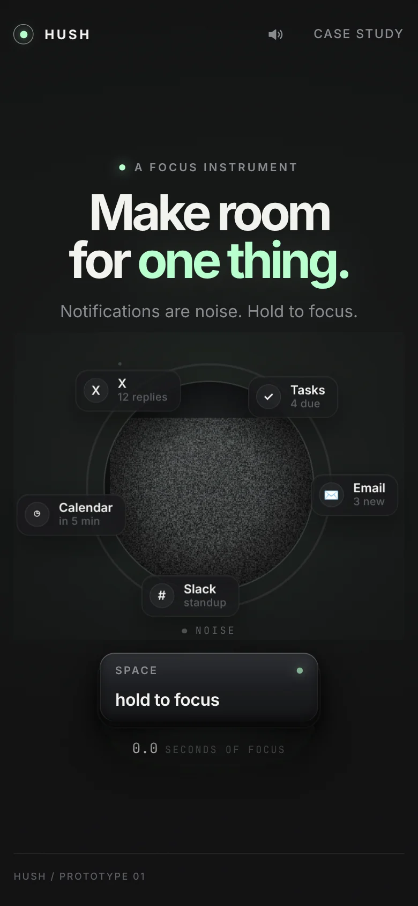

Interaction design · Case study
Quiet takes twelve seconds.
Losing it
takes
one.
Hush is a one-screen focus instrument. Eight notifications orbit a grainy orb. Hold a key for twelve seconds and they spiral in, the static clears, and the page goes quiet. Let go early and the noise rushes back. It is a design study in making attention feel physical, not another productivity app.
- Role
- Product design and frontend
- Stack
- TypeScript, Canvas 2D, Web Audio
- Surface
- One page, no runtime dependencies
- Status
- Prototype 01, November 2026

The problem
Focus apps keep turning attention into another dashboard.
Most focus tools are managers. A timer counts down. A streak counts up. A blocklist decides what you cannot see. Each one asks you to watch a surface that is supposed to protect you from the other surfaces.
That is the wrong shape for the problem. A notification is not a queue item. It is a small pull on your attention, and the pull is what you feel. Hush starts from the feeling.
- The timer turns focus into a number to monitor.
- The blocker hides the noise, but not the urge to check.
- The dashboard adds one more thing to maintain.
Hush keeps the noise on the page. It does not hide the notifications or pretend they are gone. It gives you a way to pull them in, one held breath at a time.
A focus timer vs. a held instrument
Both promise quiet. Only one makes you feel the cost of getting there.
| Criterion | A focus timer | Hush |
|---|---|---|
| Feedback | A number counts down on screen. | The page itself gets quieter. |
| Effort | Start it, then try to ignore it. | Keep pressing for twelve seconds. |
| Failure | The streak breaks and the session resets. | You let go and the noise returns in about a second. |
| Reward | A completed session in a log. | A visible quiet, a chord, and a ring that closes. |
What it is
One screen. One control. One number.
The demo is an instrument, not a task manager. There is no list, no settings screen, and no account. The entire interface is a headline, eight notification chips, an orb, a keycap, and a readout.
Hold Space, Enter, or the keycap. The ring fills over twelve seconds. The chips are drawn inward one by one. Each one leaves a burst of particles and a chime panned to the side it came from. The copy moves through three beats, then the page lands on “It's quiet now.” Press Go again and the loop restarts.
Twelve seconds is a demo duration, chosen so the arc fits in one breath and one screen recording. Eight chips are enough to feel like a field instead of a list; the phone layout drops to five. Neither number is a claim about the ideal session.



One hold, three states. The same page, captured through the test hook.
Attention is not a setting.
It is a grip.
Twelve seconds in. One and a fifth out.
Focus climbs at 1 / 12 per second while you hold. When you release, progress drains at 0.85 per second. A full hold empties in about 1.18 seconds. That gap is the whole argument: quiet is something you keep choosing, not a state you enter once.
One hold, then release
The walkthrough
The whole arc, in three minutes.
The film follows one hold from noise to quiet, then explains the machinery behind it. Every state on screen is a real capture of the prototype, driven by the same test hook used for screenshots and manual checks.

Hush, explained
A film about one held key.
The film is a separate artifact on the
explainer-v1 release, not in the repository.
The script, scenes, captures, score metadata, poster, and
golden frame are committed so the film can be rebuilt.
-
0:00
The hold
The page is loud before you touch it.
-
0:22
The noise
Eight chips, eight orbits, no shared clock.
-
0:40
One gesture
Press and hold. One state machine.
-
0:55
The pull
One number drives orbit, scale, and copy.
-
1:15
It comes back
Absorption, chime, respawn.
-
1:34
The static
A 256 × 256 noise square under a circular clip.
-
1:53
The clock
The ring and the three copy beats.
-
2:12
The leak
Twelve seconds to fill, about 1.18 to drain.
-
2:30
The quiet
120 particles, an A major bloom, reduced motion.
-
2:50
One page
1,717 lines, four files, no image or audio assets.
A 30 second route
- Open the instrument.
- Hold for four seconds, then let go. The noise comes back in under half a second.
- Hold to twelve. The ring closes, the orb blooms, and the copy lands.
- Press Go again and watch the noise come back.
How it works
Four ideas hold the whole thing up.
The instrument is four files and 1,717 lines: one page, one state machine, one canvas loop, and one audio graph. There is no framework, no backend, and no image or audio file in the product.
-
One number runs the page.
progressclimbs at 1 / 12 per second while you hold and drains at 0.85 per second when you let go. The orb, chips, ring, copy, and audio all read from it. A full hold empties in about 1.18 seconds, so the page can never feel like a checklist. -
The chips are pulled, not deleted.
Each chip has an angle, speed, phase, and delay. Its local progress is
(progress - delay) / (1 - delay), smoothed into a pull value. The orbit advances bypull * 3.4and the scale falls to0.12. A chip is absorbed only while you are still holding. -
The orb is a texture with a clock on it.
A 256 by 256 grayscale noise square is drawn under a circular clip and drifts on two sine offsets. Its alpha falls from 0.32 to about 0.048 as focus rises. A mint radial glow takes its place. The ring outside it fills from minus 90 degrees.
-
The sound is an instrument, not a soundtrack.
The audio context starts on the first gesture. A three oscillator drone opens through a lowpass filter, filtered air thins as focus rises, absorption chimes pick from five notes, and the bloom plays an A major chord. Nothing is sampled.
The core of src/main.ts
const HOLD_SECONDS = 12;
progress += dt / HOLD_SECONDS; // 12.0s to fill
progress -= dt * 0.85; // 1.18s to empty
const local = clamp((progress - delay) / (1 - delay), 0, 1);
const pull = smoothstep(local);
orbit = angle + time * speed + pull * 3.4;
scale = 1 - pull * 0.88;- Hold to fill
- 12.0s 1 / 12 per second
- Release to empty
- 1.18s 0.85 per second
- Chips in orbit
- 8 5 below 720px
- Noise texture
- 256px random grayscale
- Bloom particles
- 120 skipped with reduced motion
- Image or audio assets
- 0 in the instrument
The sound
Silence has a sound.
The soundscape follows the same progress number as the visuals. It never plays on load, never loops a file, and never asks for permission after you have already made a gesture.
Three sine oscillators at 110, 164.81, and 220 Hz are detuned by -4, +3, and +6 cents. A lowpass filter moves from 340 Hz to 1240 Hz as focus rises. A looping filtered noise layer sits behind the drone and thins out. The master runs at 0.16 into a compressor at -18 dB and 4:1.
Drone
Three detuned sines
110 / 164.81 / 220 Hz, held under the whole page.
Air
Filtered noise
A 900 Hz bandpass layer that thins as focus rises.
Chimes
Five notes, panned
523.25 to 880 Hz, placed by the chip's position.
Bloom
An A major chord
220, 277.18, 329.63, and 440 Hz with a three second tail.
Absorption chimes pan from -0.7 to 0.7 using the chip's
horizontal position, so the sound leans to the side the
notification came from. The bloom lands as four staggered sines.
Muting stores hush-muted in
localStorage and falls back to the in-page toggle
when storage is unavailable.
The loop
One loop, and no other clock.
The page runs a single requestAnimationFrame loop.
That is enough for drifting noise, orbiting chips, dust, the ring,
and the bloom, because every value is derived from progress and
time instead of stored per element.
The canvas is sized in CSS pixels multiplied by
min(devicePixelRatio, 2) and the context is scaled
once, so scene coordinates stay in CSS pixels. dt is
clamped to 50 ms so a background tab cannot jump the simulation.
A ResizeObserver handles layout changes, and reduced
motion skips dust, absorption particles, the noise texture, and
the 120 particle bloom.
- Animation loop
- 1 requestAnimationFrame
- Device pixel cap
- 2x CSS pixels stay the scene unit
- Delta clamp
- 50ms no tab switch jumps
- Layout reads per frame
- 0 size is cached on resize
These are design values, not a benchmark. The project has no automated performance trace yet. The target is a steady hold animation on a mid-range laptop, and the limitations below say what has not been measured.
Access
The quiet still arrives.
The interaction has three input paths and several ways to stop. The visual result is optional, but the state change is not.
- Keyboard and pointer. Space, Enter, and the keycap all start a hold. Pointer capture keeps a drag from escaping. Window blur, tab hide, pointer up, and pointer cancel all end it.
- Reduced motion. The noise texture, dust, absorption particles, bloom burst, and long transitions are skipped. The ring still fills, and the quiet still arrives.
-
Sound is opt in. The audio context is created
only on a gesture. The header toggle has
aria-pressed, and the preference survives a reload. - Focus stays visible. Every control has a visible focus ring. Interactive elements are ignored by the hold handler, so links and buttons keep working during the page's keyboard listener.
- The limit is the readout. The progress ring and copy beats are visual. A screen reader can read the page and operate the controls, but it does not hear the ring fill. A future version should announce the three copy beats at meaningful thresholds.
The page uses one heading, semantic landmarks, a skip link on
this case study, and no meaning that depends on color alone. The
keycap exposes aria-pressed while held, and the
readout stays out of the live region on purpose: a timer that
speaks every tenth of a second would break the quiet it is
describing.
Limits
What this does not claim.
A demo is more convincing when it says where the edges are. These are the current ones.
- The twelve second hold is a demo, not a session timer. There is no 25 minute mode yet.
- Notifications are staged in the page. Nothing connects to an inbox, a browser API, or the operating system.
- There is no account, sync, or settings beyond the mute preference.
-
There is no automated test suite.
npm run buildtypechecks the app, and the?testhook steps the arc on demand for captures and manual checks. - There is no published frame trace. The performance values are design targets, not a benchmark.
- The progress ring is visual. Screen reader users do not hear it fill.
- The phone layout drops from eight chips to five and shortens the stage. Touch works, but the hold is the only gesture.
- The sound is mixed for the demo. There is no device calibration, 3D audio, or haptics.
- The film is a separate artifact on GitHub Releases. It is not embedded in the product.

What is next
Make the hold mean something outside the demo.
The interaction has proven the feeling. The remaining work is duration, real inputs, and evidence.
-
A 25 minute mode
Keep the twelve second hold as the way in, then let the quiet extend into a real session without turning it into a countdown.
-
One real inbox adapter
Let a single provider feed the chips with local previews. No feed, no algorithm, no unread count arms race.
-
A local session log
Show the last seven holds as a small history, not a streak. The point is the feeling, not the score.
-
A stronger accessible mode
Announce the three copy beats at meaningful thresholds and add haptics on mobile.
-
A small user study
Measure whether the drain changes how long people hold, without adding points or badges.
-
A second instrument
Run the same progress model through a different task: breathing, reading, or a single timed sprint.